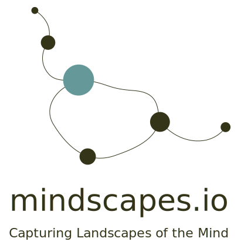

Mindscaping is a journey High up in the sky
Where you look down And see
Valley of Fear, Lake of Desires, Village of Love...
Becoming so clear So small
What it is
Making time for reflection.
Mindscapes has adapted to the fast-paced modern life overloaded with information. We combines writing with diagram making, effectively. keep a habit of reflection to connect with your unconcious mind, whether it is through a form of writing or making artworks.
Close the app with peace of mind.
Ever stuck with a thought or negative emotions for minutes, every other hour, even repeating day after day? Cyclical thoughts are unproductive and often generates toxic emotions. The best way to stop the patterns is through writing down the thoughts. Mindscapes helps you identify how the cyclical thoughts start and where we can make interventions.
Your own your data.
Your account is only accessible by you. Your data transit is protected. Your entries are encrypted at storage in our data base.
How it Works
Step 1: Stream of Conciousness
Mindscaping requires your focus for the next 10 to 20 minutes while you are digesting your thought.
Mindscapes applies Water Logic, a metaphor to describe by phycologist Edward de Bono, who described the process of thinking as a flow of water. That with one thought, it will flow to another, and to the next, until it forms a spiral, a vortex.
This continuous, uninterrupted flow of thoughts is called the “stream of consciousness”.
Step 2: Flow of Attention
Flow is the motion of thinking. Like water flows continuously downhill due to gravity, our thinking is driven by the focus of attention.
Different from water, in mindscaping, we can go back easily and see where our flow has been “physically”. So right now, we can look at the software with new eyes and rewalk through our thoughts, from one thought leadsto the next, until we go into a spiral…
The second step of Mindscaping is to revisit where your attention has been and map out the trajectory of the flow. Starting from any thought on your screen, connect it with what it naturally relates or flows to. Continue doing so until you are informed “a loop has formed”, and then you will be asked to start again on a new thought you haven’t visited. You might find some of the thoughts stand out and get stuck on where to go next – try to focus on the individual thought in this case. Repeat the process until there is no unvisited thoughts left behind, or every circle has one (and only one) outgoing connection.
Step Three: Diagram of Perceptions
Perceptions are stabilized patterns formed in the unconcious mind.
Mindscapes help you identify the relationships between your thoughts, the patterns of perceptions, where your values, and tipping point of your mental models.